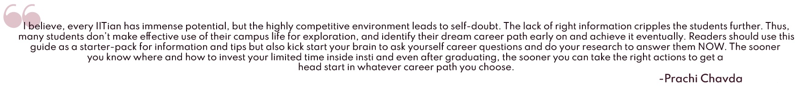
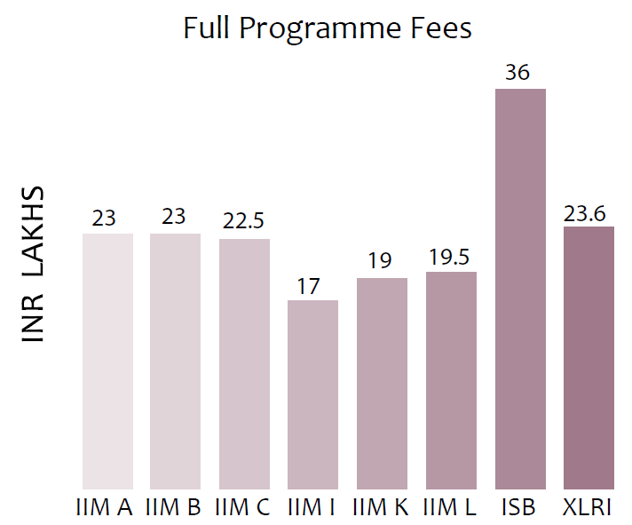

A (mini) Guide to Management Studies, India Chapter
Arvind Manimurugan, Namit Agrawal, Prachi Chavda, Samyak Shah, Shaunak Natarajan, Tanisha Agarwal
If you are a student/recent graduate who aspires to join the best Business Schools in India then
this guide will be quite handy for you!
This guide is a product of a collaboration between Insight and an IIT B alumna, Prachi
Chavda, from the class of
2017. The conception of this guidebook has an interesting story behind it. If we may (we
won’t mind if you skip to the next paragraph :-) )
On 5th March 2020, a few days before the COVID-19 lockdown, Prachi was travelling for work,
and her flight was delayed by a couple of hours. By some coincidence, a girl wearing an H10
hoodie was sitting right next to her, so in order to kill time, they talked for hours. During
the course of that conversation, Prachi realised how lost the sophomore was, like herself at
that stage, not fully knowing the opportunities available in and after college or even whom to
approach for guidance. Inspired to bridge the knowledge gap, Prachi decided to do her research.
In May 2020, she reached out to Insight with this idea to pen down learnings from various alumni.

This guide focuses on Business Management Programs, mainly MBA since it is the most popular
management degree.
We plan to release the guide in two parts, the first part (this one) covers relevant
information regarding management
programs in India. We have covered eight schools - IIM Ahmedabad, IIM Bangalore, IIM
Calcutta, IIM Kozhikode,
IIM Indore, IIM Lucknow, ISB (Hyderabad and Mohali) and XLRI (Jamshedpur) for analysis and
interviews and FMS Delhi.
We will soon release the next part, extensively covering information about management
programs in foreign schools. We
have collected information from reliable online resources and reached out to 100+ IIT B
alumni from the listed B-Schools,
to make this mini-guide as diverse and credible as possible.
Why MBA?
If each of us asked ourselves why we chose IIT, many of us might answer “my parents asked
(read: forced)
me to give JEE” as we were very young and did not know any better. Approaching graduation,
most of us
face the ‘problem of plenty’ - accepting placement offers, applying for higher studies,
pursuing an MBA,
or doing something unconventional. While many options may exist, they fall into two broad
categories -
‘research and academia’ or ‘the corporate path to success’. Suppose you do end up (whether
pre-planned or not) with
a job. In that case, it is highly probable that you would ask yourself these questions
sooner or later in life- “should
I do a Management course or not?” and “should I give CAT/GMAT or not?”.
Quite often, people apply for IIMs after their graduation if they are not able to secure their
dream job in a
particular stream. Many believe that an MBA would boost their salary and enhance their chances
of pursuing the
profile that they desire. While this may be true to some extent, prior job experience greatly
helps in securing
an internship in a B-School. The summer placement, as it is called, is just five months into the
start of most
MBA programs. A fresher’s CV is judged mostly based on the UG CPI and previous internship(s)
experience. Moreover,
failing to secure the right internship during the MBA can hinder good placements later. Thus
freshers find it challenging
to secure top placements in most B-Schools, thus resulting in a cycle. Most alumni that we
contacted were against the
idea of joining a B-School just after graduation. When asked “How many years of work
experience did you have before MBA?”
and “What according to you is the advisable number of years of pre-MBA work
experience?”, (we plotted the answers as infographic-1) we can see that :
- For core sector, the recommended experience before MBA is relatively low (0 or 1-2 years)
- For finance, the majority recommend 2-3 years of experience before MBA.
- For analytics, the majority recommend 1-2 years of experience before MBA.

Infographic -1 Alumni inputs on work experience

Infographic-2: MBA program fees comparison
Looking at infographic-2, one might wonder why MBAs cost as much as they do, and why they are so sought after when most people could get a decent package after 2-3 years of job experience. We asked the same to many IIT-B alumni, and the answers helped us separate hype from reality and understand the value of an MBA. While we got diverse responses, the responses can be broadly classified into the following themes:
| Changing profile | An MBA is an excellent opportunity to shift profiles in the middle of your career. Be it a consulting job where you are stuck in one vertical or a back-end job, or you may want to shift to front-end client handling. While a shift in verticals is possible by applying to different companies, MBA equips you with a diverse set of skills which help you adapt to the field even without the required experience. |
|---|---|
| Shift to the managerial role | IIT B being an engineering institute has an abundance of technical roles during placements. People tend to lose interest in these roles or want to shift to the middle or top management. However, the lack of managerial experience restricts their growth. An MBA is an excellent way to transition as the combination of technical expertise with organisational knowledge opens up many opportunities in consulting, FMCG, Finance, to name a few. |
| Networking | All MBA curriculums have a networking course. Doing an MBA helps you connect with a peer group diverse in terms of background, work experience, etc. Thus one gains new perspectives to the same problem and is helpful in soft skill development. The network that a person develops helps them even after their MBA. A good network means that you can call up your consult or finance friend for the project that you are working. This network even helps in opening opportunities if and when you need to move to new companies or sectors. |
| Back to college | A special mention among the responses that we got from our survey is that ‘it would be an opportunity to go back to the college experience’. Undoubtedly an MBA is much more hectic as compared to an undergraduate degree, due to a multitude of assignments, case interviews, resume submissions, and so forth. But it provides a break from the monotony of a 9 to 5 job. The opportunity to explore new branches and meet new people attracts people to pursue an MBA. |
Table-1
In table-1 above, while individual categories are not a complete justification of the reason to
pursue an MBA,
our respondents were motivated by a combination of these factors giving different weightage to
each.
About Networking, Rutesh Chavda, IIM C alumnus, says
MBA in India v/s Abroad - A Brief Comparison
MBA graduates are in great demand today. It is crucial to choose the right
business school to establish a successful career after an MBA. Most Indian MBA
candidates/aspirants are often confused between pursuing an MBA in India or abroad.
Here is a detailed comparison of pursuing an MBA in India vs an MBA abroad to help you make
sound decisions that can benefit your career in the long run.
| Entrance Exam for MBA | The key entrance exam for MBA in India is the Common Admission Test (CAT). Many top B-schools in India, such as the prestigious IIMs accept CAT scores. Personal Interviews follow the written exam. On the other hand, for taking admission in an MBA course at a foreign B-School, candidates need to appear for GRE and GMAT (preferred). These tests are conducted on a rolling basis and give an aspirant a choice to pick the exam date as per their convenience. |
|---|---|
| Exposure | Studying abroad comes with its own set of advantages such as enabling students to get exposure to a new culture and lifestyle, opening up a window of opportunities. These experiences help a graduate look at problems from different perspectives. You can get the chance to learn a new language, and interact with other international students. You will also become more independent and confident, broaden your horizons and help in diversifying your thoughts. You won’t get this exposure while pursuing an MBA in India. |
| Work experience before MBA | A lot of Indian B-schools accept students with little or no work experience for MBA, unlike most universities abroad. Universities in the US, Canada and Australia need candidates to have, on an average, 3-5 years of work experience. Therefore, depending on how much experience you have, you can decide whether to pursue an MBA in India or abroad. |
| Course Structure | The MBA course curriculum abroad has a more practical approach, where students are required to have field visits, and grades are not disclosed for internships/placements. The majority of MBA programs in India are more focused on the theoretical aspects. With time, however, at least the top b-schools in India are making changes and introducing new concepts and courses in the MBA curriculum. We will discuss, in-depth, the MBA curriculum abroad and compare it to that in India in part-2 of the guide. |
| Fees and net cost | Acquiring an MBA degree is comparatively less expensive in India than in other countries. An MBA in India can cost anywhere from Rs. 20 lakh - Rs. 35 lakh while an MBA abroad may cost somewhere between Rs. 75-95 lakh, depending on the B-School you are admitted to. The living expenses abroad are also significantly higher as compared to India, which further increases the cost. Do keep in mind the ROI is similar for India and abroad. Since this guide discusses Indian MBAs, in a later section, we have analysed fees to salary ratio. |
| Salary after MBA | When it comes to the average salary, there is a lot of difference between the average annual packages at IIMs, ISB and the top business schools abroad. ISB graduates (considering both campuses) draw an average salary of ~Rs. 25 lakhs while those from IIM A can expect to get around ~Rs. 25 lakhs as well. The alumni of some of the most prestigious and reputed universities abroad such as Harvard and Wharton can earn an average salary in the range of Rs. 70-90 lakh($95k-120k). But it is noteworthy that for the latter, the jobs are located in places with very high costs of living.MBAs abroad are extremely heavy on one's pocket. Most students take loans/scholarships to pay for business school. Paying back the loan is the priority when the candidate gets their first job. These loans generally take around five years to be paid back. |
Table-2
On Exposure, Rishabh Bajaj, an LBS-MBA alumnus, says that “The international exposure he had at LBS helped him become a more well-rounded person. Education at LBS was very enriching since it was not limited to the classroom and had a lot of practical components.”